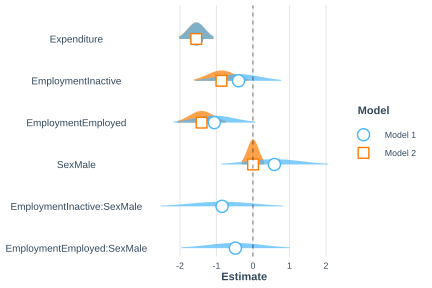

6.1 Logistic regression model
When the variable of interest is dichotomous, taking values of zero or one, the classical linear model is not appropriate because it can generate predictions outside the interval \((0,1)\) and because the variance of the response depends on its mean. To address these limitations, the logistic regression model is used; it is one of the most widely used generalized linear models for analyzing binary variables. In the context of household surveys, logistic regression can be used to analyze the association between a condition of interest, such as poverty, and sociodemographic characteristics of individuals or households.
Consider a dichotomous variable \(Y_k \in \{0,1\}\), whose expectation is \(\theta_k=Pr(Y_k=1)\). The logistic regression model relates this probability to a set of explanatory variables through the logit link function, defined as
\[ \log\left(\frac{\theta_k}{1-\theta_k}\right) = \beta_0+\beta_1x_{k1}+\cdots+\beta_px_{kp} =\mathbf{x}_{k}\boldsymbol{\beta} \]
Where \(\boldsymbol{\beta}\) is the vector of regression coefficients associated with the covariates. This logit transformation maps the restricted probability interval \((0,1)\) onto the entire real line, allowing the relationship between the response and the auxiliary variables to be modeled through a linear predictor. Equivalently, the probability of success can be expressed by the following relationship:
\[ \theta_k = Pr(Y_k = 1 \mid \mathbf{x}_k) = \frac{\exp(\mathbf{x}_k\boldsymbol{\beta})} {1+\exp(\mathbf{x}_k\boldsymbol{\beta})} \]
Equivalently, the probability that the unit does not have the characteristic of interest is \(Pr(Y_k = 0 \mid \mathbf{x}_k) = 1-\theta_k\). Under this parameterization, each coefficient in \(\boldsymbol{\beta}\) represents the effect of a covariate on the logarithm of the odds that the event of interest occurs, holding the other variables in the model constant. The parameters can be estimated using the pseudo-maximum likelihood approach. This method incorporates the expansion factors into the conventional likelihood function in order to obtain estimators that are consistent with respect to the target population. Following Heeringa et al. (2017), the pseudo-likelihood function for the logistic model is defined as
\[ PL(\boldsymbol{\beta}) = \prod_{k} \left[ \theta_{k}^{y_{k}} \left\{ 1-\theta_{k} \right\}^{1-y_{k}} \right]^{w_{k}} \]
Where the subscript \(k\) represents an observed unit in the sample. Likewise, \(\theta_{k}\) denotes the probability that unit \(k\) in PSU \(i\) in stratum \(h\) has the characteristic of interest, \(y_{k}\) corresponds to the observed value of the dichotomous variable for that unit, and \(w_{k}\) represents the expansion factor associated with the observation.
The contribution of each observation to the estimation process is determined by its respective expansion factor, allowing the function to appropriately reflect the characteristics of the complex survey design. Because maximizing the pseudo-likelihood is equivalent to maximizing its logarithm, the problem is therefore reduced to optimizing the following function:
\[ \ell(\boldsymbol{\beta}) = \sum_{k} w_{k} \left[ y_{k}\log(\theta_{k}) + (1-y_{k}) \log(1-\theta_{k}) \right] \]
This expression is the objective function used by numerical optimization algorithms to obtain the estimator of the model parameters. It is important to note that the preceding function is not a likelihood in the strict sense under the complex survey design. For this reason, the term pseudo-likelihood is used, and the estimators obtained by maximizing it are known as pseudo-maximum likelihood estimators (Pseudo Maximum Likelihood Estimators, PMLE).
According to Molina & Skinner (1992), under regularity conditions, these estimators are consistent and asymptotically normal, forming the basis of the inference procedures implemented in most statistical packages for the analysis of complex survey data.
Once the pseudo-maximum likelihood estimators have been obtained, their variances are estimated using Taylor linearization techniques (Binder, 1983), which explicitly incorporate the characteristics of the complex sampling design. The variance-covariance matrix of the estimated parameters, denoted by \(\text{Var}(\hat{\boldsymbol{\beta}})=\boldsymbol{\Sigma}\), is obtained from a linear approximation of the estimating equations around the true value of the parameters.
This matrix describes the precision of the estimators, since its diagonal elements correspond to the variances of each coefficient, while the off-diagonal elements represent the covariances between pairs of coefficients. Its estimation is the basis for calculating standard errors, constructing confidence intervals, and carrying out hypothesis tests on the model parameters.
Because the data come from a complex sample design, it is necessary to appropriately incorporate the weights, stratification, and clustering in order to obtain consistent estimators of the parameters and their standard errors. In R, this task can be carried out using the svyglm() function from the survey package, which extends generalized linear models to the context of complex surveys.
Continuing with the example survey, and in order to analyze the factors associated with poverty status, a logistic regression model is fitted using expenditure, employment status, and sex as explanatory variables. Because the data come from a survey with a complex sample design, estimation is carried out using the svyglm() function from the survey package, specifying family = binomial to indicate that the response variable is dichotomous and that the logit link function will be used. The results of the fit are presented in Table 6.1.
logit_model <- svyglm(
formula = poverty ~ Expenditure + Employment + Sex,
family = binomial,
design = survey_design
)In the model specification, the argument formula = poverty ~ Expenditure + Employment + Sex defines the relationship between the response variable poverty and the covariates included in the linear predictor. For categorical variables, the function automatically generates the corresponding indicator variables and estimates their effects relative to a reference category. The argument design = survey_design, in turn, incorporates the sample design information. The resulting object, logit_model, contains the estimated parameters, their precision measures, and the statistics needed to make inferences about the relationship between poverty status and the explanatory variables considered in the model.
The results in Table 6.1 show the estimates of the regression coefficients, together with their standard errors, confidence intervals, and p-values. The model indicates that a higher level of expenditure is associated with a lower probability of being in poverty. Likewise, compared with the reference category (unemployed), both inactive and employed persons have a lower propensity to be poor, with this effect being more pronounced among the latter. In contrast, sex has a very small influence on the probability of poverty once the effect of the other covariates included in the model is controlled for.
## 2.5 % 97.5 %
## (Intercept) 1.448618 2.926867
## Expenditure -0.007044 -0.003752
## EmploymentInactive -1.618341 -0.108547
## EmploymentEmployed -2.076705 -0.737132
## SexMale -0.309026 0.314060| Parameter | term | estimate | std.error | statistic | p.value |
|---|---|---|---|---|---|
| 1 | (Intercept) | 2.188 | 0.373 | 5.863 | 0.000 |
| 2 | Expenditure | -0.005 | 0.001 | -6.497 | 0.000 |
| 3 | EmploymentInactive | -0.863 | 0.381 | -2.266 | 0.025 |
| 4 | EmploymentEmployed | -1.407 | 0.338 | -4.161 | 0.000 |
| 5 | SexMale | 0.003 | 0.157 | 0.016 | 0.987 |
Figure 6.1 presents the distribution of the estimators of the regression coefficients. It can be seen that, for all covariates except sex, the confidence intervals do not include the value zero, providing evidence of a statistically significant association. In contrast, the confidence interval associated with the sex variable contains the value zero, so there is not enough evidence to conclude that this variable has a significant effect once the other covariates included in the model are controlled for.
To visualize the distribution of the coefficients, plot_summs() from the jtools package is used, together with ggstance (Henry et al., 2024) for the horizontal geometry of the intervals.

Figure 6.1: Distribution of the parameters of the baseline logistic model
The model can be extended by incorporating interaction terms to assess whether the effect of one explanatory variable depends on the values taken by another. In this case, an interaction between sex and employment status is included through the term Sex:Employment, with the aim of analyzing whether the relationship between employment status and the probability of poverty is the same for men and women. Without this term, the model assumes that the effect of employment status on poverty is identical for both sexes. By incorporating the interaction, however, this effect is allowed to vary between men and women, capturing possible differences in the way labor-market status is associated with poverty in each group. The results of the fitted model are presented in Table 6.2.
interaction_logit_model <- svyglm(
formula = poverty ~ Expenditure + Employment + Sex + Sex:Employment,
family = binomial,
design = survey_design
)| term | estimate | std.error | statistic | p.value |
|---|---|---|---|---|
| (Intercept) | 1.770 | 0.610 | 2.900 | 0.004 |
| Expenditure | -0.005 | 0.001 | -6.473 | 0.000 |
| EmploymentInactive | -0.395 | 0.594 | -0.665 | 0.507 |
| EmploymentEmployed | -1.059 | 0.570 | -1.860 | 0.066 |
| SexMale | 0.587 | 0.748 | 0.785 | 0.434 |
| EmploymentInactive:SexMale | -0.846 | 0.860 | -0.984 | 0.327 |
| EmploymentEmployed:SexMale | -0.481 | 0.760 | -0.633 | 0.528 |
When the interaction between sex and employment status is incorporated, expenditure continues to show a negative and statistically significant association with the probability of poverty, remaining the covariate with the strongest explanatory evidence in the model. In contrast, the main effects of employment status lose statistical importance once the interaction terms are included, suggesting greater uncertainty in the estimation of their effects. Neither the main effect of sex nor the coefficients associated with the interactions between sex and employment status are statistically significant at the 5% level. Consequently, the inclusion of the interaction terms does not appear to provide additional relevant information compared with the model without interaction.
Figure 6.2 presents a comparison of the coefficient estimates and their corresponding confidence intervals for the models with and without interaction. It can be seen that incorporating the interaction terms increases the uncertainty associated with several of the parameters, as reflected in wider confidence intervals. Likewise, the interaction coefficients have estimates close to zero and wide confidence intervals that include that value, which is consistent with the lack of statistical evidence for concluding that the effect of employment status on the probability of poverty differs between men and women.

Figure 6.2: Comparison of the parameters of the logistic model with and without interactions